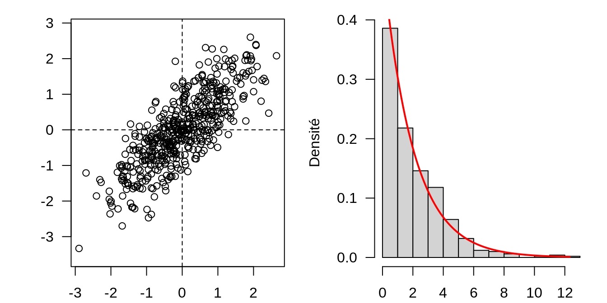
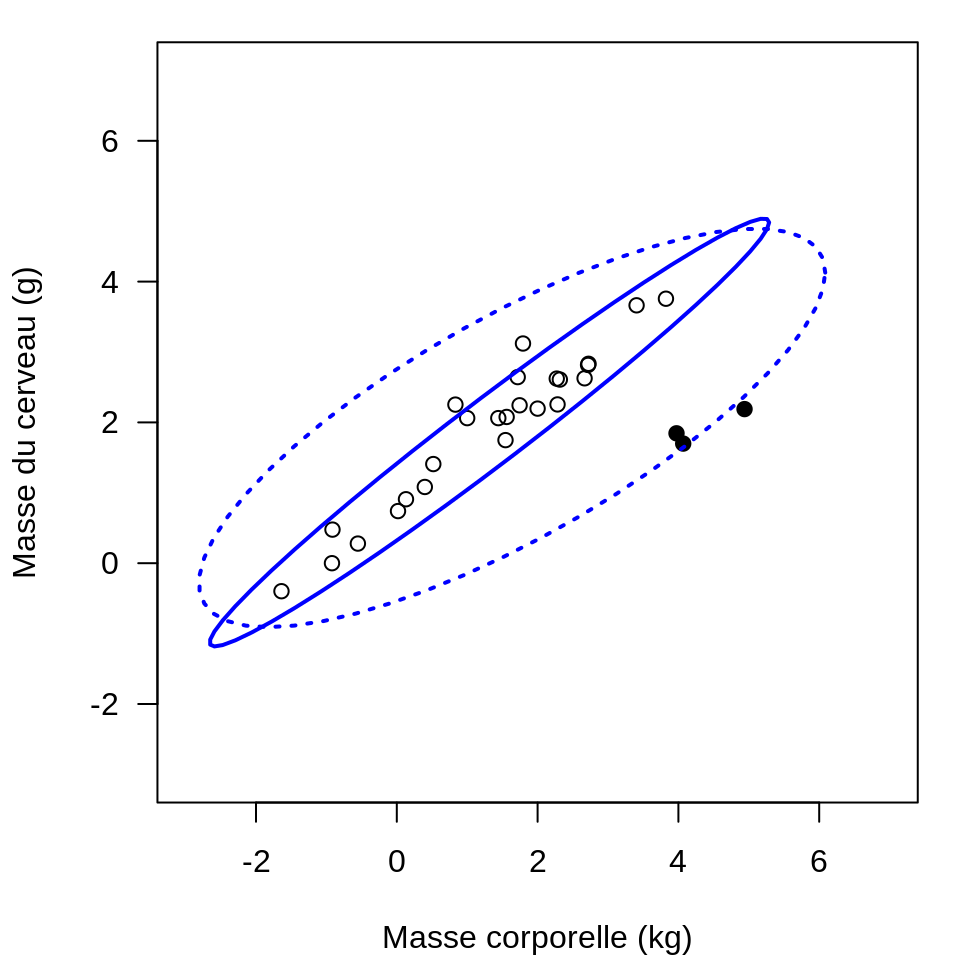
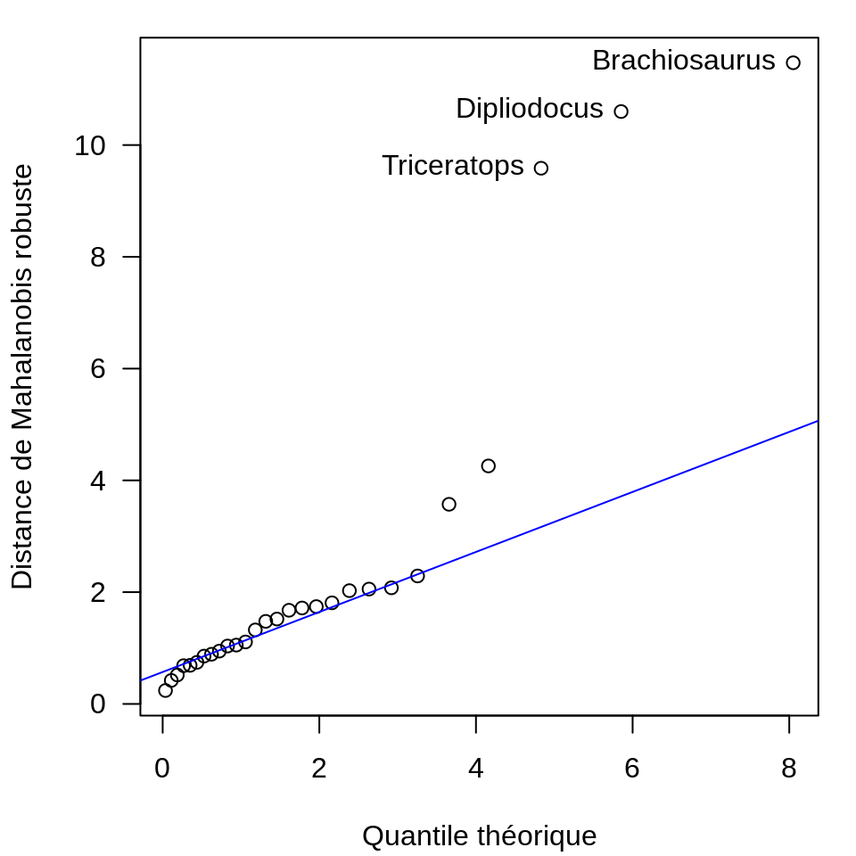

21 Détection des valeurs aberrantes
La détection de valeurs aberrantes (outliers), ou considérées comme inattendues, est une tâche courante lors de l’analyse de données de composition. Cette dernière repose sur la définition d’un seuil ou d’une valeur limite permettant de séparer les valeurs aberrantes du reste des données.131 Ce seuil correspond généralement à une distance limite par rapport au centre du jeu de données, au-delà de laquelle les individus ne sont pas uniquement affectés par la variation naturelle du phénomène étudié, voire relèvent d’un ou de plusieurs processus complètement différents.132
Une telle approche nécessite de bien distinguer les valeurs aberrantes (observations issues d’une ou plusieurs distributions différentes) des valeurs extrêmes (issues de la même distribution malgré leur éloignement du centre).133 Cette distinction constitue une des principales difficultés : les valeurs aberrantes ne sont pas nécessairement des valeurs extrêmes, en particulier lorsqu’elles résultent de phénomènes secondaires (taphonomie, contaminations…). Ainsi, les approches univariées sont généralement inefficaces pour détecter les valeurs aberrantes.134 Les données de composition sont par nature mutlivariées : la détection de valeurs abbérantes doit donc reposer sur la position des données (distance par rapport au centroïde), mais prendre également en compte la forme de ces dernières.135
La distance de Mahalanobis (21.1) permet de déterminer la similarité entre un individu \(x\) multivarié et un ensemble d’observations en prenant en compte la position (moyenne \(\mu\)), ainsi que la forme et la taille (quantifiées par la matrice de covariance \(\Sigma\)) de cet ensemble.
\[\begin{equation} d_M = \sqrt{ (x - \mu)^T \Sigma^{-1} (x - \mu) } \tag{21.1} \end{equation}\]
Dans le cas de données multivariées à \(p\) dimensions distribuées normalement, la distribution du carré des distances de Mahalanobis (\(d_M^2\)) de l’ensemble des observations suit approximativement une loi du \(\chi^2\) à \(p\) degrés de liberté (fig. 21.1).
## Simuler 500 observations de deux variables
## Les deux variables ont pour moyenne 0 et écart-type 1
## La corrélation entre les deux variables est fixée à 0.8
sigma <- matrix(c(1, 0.8, 0.8, 1), nrow = 2, ncol = 2) # covariance
z <- MASS::mvrnorm(n = 500, mu = c(0, 0), Sigma = sigma)
## Calculer les distances de Mahalanobis
## (chaque observation par rapport à l'ensemble des données)
## NB : mahalanobis() retourne le carré de la distance
d2 <- mahalanobis(x = z, center = colMeans(z), cov = cov(z))
## Paramètres graphiques
par(mfrow = c(1, 2), mar = c(2, 4, 1, 1) + 0.1, las = 1)
## Diagramme de dispersion des observations
plot(x = z, type = "p", xlab = "", ylab = "", asp = 1)
abline(h = 0, v = 0, lty = 2)
## Histogramme des distances
hist(d2, freq = FALSE, main = "", xlab = "", ylab = "Densité")
## Loi du khi-deux à 2 degrés de liberté
curve(dchisq(x, df = 2), from = 0, to = max(d2),
col = "red", lwd = 2, add = TRUE)
Figure 21.1: Gauche : données simulées distribuées normalement. Droite : histogramme des distances de Mahalanobis et densité de probabilité de la loi du \(\chi^2\) à 2 degrés de liberté (en rouge).
Une valeur abérrante peut ainsi être définie comme ayant une distance de Mahalanobis très importante par rapport à l’ensemble des observations. De cette façon, une certaine proportion des observations peut être isolée, par exemple : les 2% de valeurs les plus élevées, soit les valeurs supérieures au quantile d’ordre 0,98 (98e centile) de la loi du \(\chi^2\). Pour un seuil donné, on peut ainsi définir des ellipsoïdes ayant la même distance de Mahalanobis par rapport au centre des données (fig. 21.2). Une telle approche soulève cependant quelques difficultés.
D’une part, la distance de Mahalanobis est susceptible d’être fortement affectée par la présence de valeurs aberrantes. Peter J. Rousseeuw et Bert C. van Zomeren136 recommandent ainsi d’utiliser des méthodes robustes (qui ne sont pas excessivement affectées par la présence de valeurs aberrantes) pour l’estimation de la position et de la dispersion des données137. Par exemple, la figure 21.2 représente la masse du cerveau de différents animaux en fonction de leur masse corporelle. Les données suivent une même tendance, à l’exception des dinosaures qui présentent une importante masse corporelle et un petit cerveau. Lorsque des estimateurs classiques sont utilisés, l’ellipse de tolérance est fortement affectée par les dinosaures. Au contraire, l’usage d’un estimateur robuste permet d’exclure les dinosaures qui constituent effectivement des valeurs aberrantes au regard de l’ensemble des données.
## Répliquer la figure 1 de Rousseeuw et van Zomeren (1990)
data("Animals", package = "MASS")
brain <- log10(Animals) # Echelle logarithmique
## Paramètres graphiques
par(mar = c(4, 4, 1, 1) + 0.1, las = 1)
## Diagramme de dispersion
plot(
x = brain, type = "p", asp = 1,
xlim = c(-3, 7), ylim = c(-2, 6),
xlab = "Masse corporelle (kg)",
ylab = "Masse du cerveau (g)"
)
## Mettre en évidence les dinosaures
dino <- c("Dipliodocus", "Triceratops", "Brachiosaurus")
lines(
x = brain[rownames(brain) %in% dino, ],
type = "p", pch = 16
)
## Ellipses de tolérance
## Estimateurs classiques
car::ellipse(
center = colMeans(brain),
shape = cov(brain),
radius = sqrt(qchisq(0.975, df = 2)),
center.pch = NULL, col = "blue", lty = 3
)
## Estimateurs robustes
rob <- MASS::cov.rob(brain, method = "mve") # Ellipsoïde de volume minimal
car::ellipse(
center = rob$center,
shape = rob$cov,
radius = sqrt(qchisq(0.975, df = 2)),
center.pch = NULL, col = "blue", lty = 1
)
Figure 21.2: Masse du cerveau en fonction de la masse corporelle de 28 espèces animales (échelle logarithmique, base 10). Les symboles pleins correspondent aux dinosaures. Ellipses de tolérance (seuil fixé à \(\chi^2_{2;0.975}\)) calculées à partir de la moyenne et de la covariance classiques (tirets) et à l’aide d’estimateurs robustes (ellipsoïde de volume minimal ; trait plein).
D’autre part, le choix du seuil permettant de caractériser une observation comme aberrante doit faire l’objet d’une discussion. Il n’y a en effet aucune raison a priori pour qu’un seuil particulier soit applicable à tous les jeux de donnée.138 Robert G. Garrett139 propose d’utiliser une méthode graphique en représentant les distances robustes, ordonnées par rang, en fonction des quantiles théoriques de la loi du \(\chi^2\) (fig. 21.3). Les valeurs extrêmes sont alors retirées jusqu’à ce que les données s’alignent sur une même droite (fig. 21.3). Il est possible de combiner ces ces approches en fixant un seuil pour identifier de potentielles valeurs aberrantes, puis d’inspecter les données afin d’expliquer les différences observées en faisant appel à l’expérience de l’analyste140.
## Distance de Mahalanobis robuste
d <- sqrt(mahalanobis(brain, center = rob$center, cov = rob$cov))
## Trier par rang
d <- sort(d)
## Paramètres graphiques
par(mar = c(4, 4, 1, 1) + 0.1, las = 1)
## Quantiles théoriques
q <- qchisq(ppoints(length(d)), df = 2)
## Diagramme Quantile-Quantile
plot(
x = q,
y = d,
xlab = "Quantile théorique",
ylab = "Distance de Mahalanobis robuste"
)
## Tracer la droite théorique
qqline(y = d, distribution = function(p) qchisq(p, df = 2), col = "blue")
## Mettre en évidence les dinosaures
text(x = q[d > 9], y = d[d > 9], labels = names(d[d > 9]), pos = 2)
Figure 21.3: Masse du cerveau en fonction de la masse corporelle de 28 espèces animales (échelle logarithmique, base 10). Les symboles pleins correspondent aux dinosaures. Ellipses de tolérance (seuil fixé à \(\chi^2_{2;0.975}\)) calculées à partir de la moyenne et de la covariance classiques (tirets) et à l’aide d’estimateurs robustes (ellipsoïde de volume minimal ; trait plein).
Enfin, comme nous l’avons vu précédemment (§ 19.3), la définition de la covariance ne respecte pas le principe de subcompositional coherence. Dans le cas des données de composition, une transformation préalable des données est donc nécessaire (§ 20). Peter Filzmoser et Karel Hron141 ont montré que les distances de Mahalanobis sont les mêmes quelle que soit la transformation utilisée (\(ALR\), \(CLR\) ou \(ILR\)) si des estimateurs classiques de position et de dispersion sont utilisés. Si des estimateurs robustes sont utilisés, les distances sont les mêmes pour des données transformées \(ALR\) ou \(ILR\).